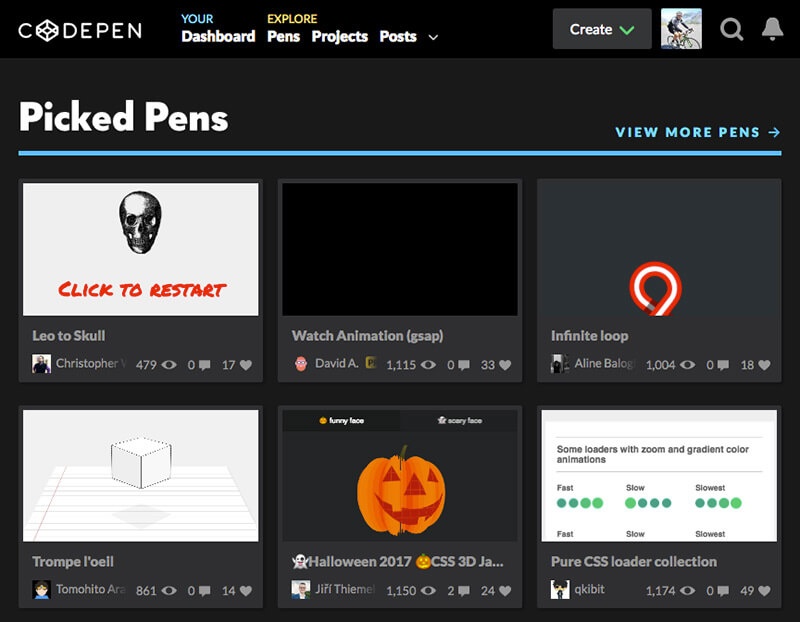
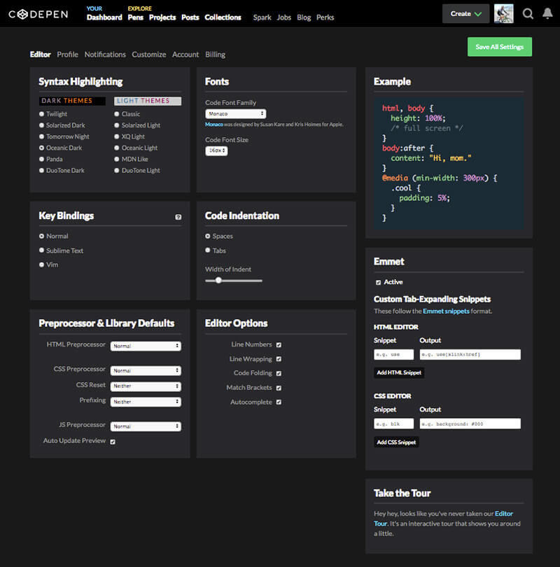
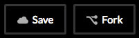
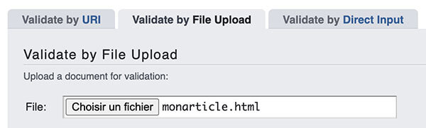
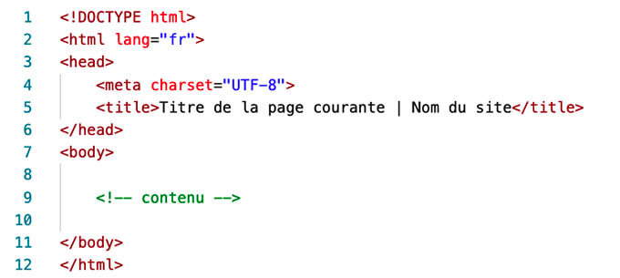
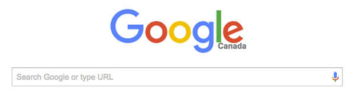
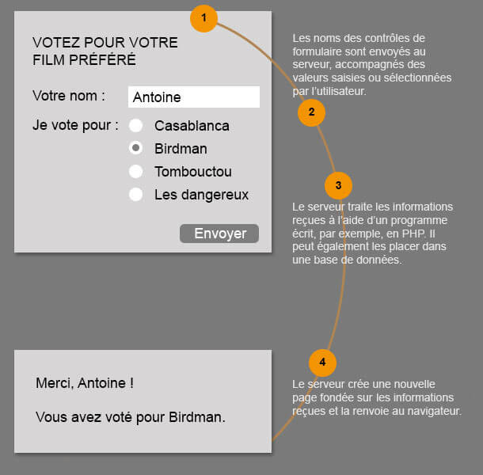
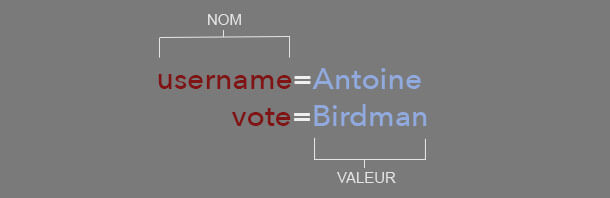

Création de votre boîte à outils Codepen
L'application en ligne CodePen est utile pour constituer rapidement une banque d'exemples de code réutilisable.
Elle est aussi un réseau social pour les codeurs et permet à ce titre des échanges illimités.

Créez un compte
Créez un compte et explorez la page des Paramètres (Settings) où vous pouvez notamment choisir :
- l'allure de l'interface de codage (section Syntax Highlightingem>);
- l'autocomplétion du code (Autocomplete, section Editor Options);
- Etc.

Fork
Vous pouvez modifier le code de n'importe quel pen. Mais pour sauvegarder vos modifications, voici ce qu'il faut faire:
- Ouvrez le pen de votre choix;
- Appuyez sur le bouton « Fork »: cela crée une copie sur votre « Dashboard »;
- Modifiez et sauvegardez les modifications en cliquant sur « Save »;

- Vous pouvez également modifier le nom du pen afin de le personnaliser en cliquant sur l'icone en forme de crayon puis en changeant le nom du pen. Il suffit d'enregistrer (Save) pour terminer.
Travail formatif 1
À partir de maintenant, nous allons vous créer une boîte à outils qui pourra vous servir lors de vos travaux
- Rendez-vous sur le site de Codepen et créez-vous un compte.
- Assurez-vous d'être enregistré·e (Log in) avant de continuer.
- Maintenant, tel que vu à la leçon 2, expérimentez le balisage dans la fenêtre de code ci-dessous : il suffit d'insérez le curseur de la souris dans le code HTML (à gauche) pour le modifier et d'en constater le résultat à l'affichage (à droite).
See the Pen c01-html01 by Frédéric Lacroix (@frlacroix) on CodePen.
- Ensuite, cliquez sur « Edit/Fork on Codepen » (en haut à droite) pour ouvrir une nouvelle fenêtre et travailler plus librement.
- Une fois dans la fenêtre de Codepen, cliquez sur le bouton Fork (au bas de la fenêtre à droite) pour sauvegarder ce « pen » dans votre collection, et renommez-le au besoin. L'opération Fork signifie que vous pouvez sauvegarder une version du travail dans votre compte Codepen et la conserver pour référence.
- Accédez à votre compte en haut à droite, cliquez sur Profile. Copiez ensuite l'adresse web qui apparaît dans le navigateur (cela ressemble à https://codepen.io/frlacroix) et envoyez-la moi dans une discussion privée sur TEAMS.
Un bon balisage, qu'est-ce que c'est ?
L'écriture de documents HTML bien structurés est la clé du web actuel et conforme aux standards.
Vous devriez suivre les quatre recommandations suivantes lors de la création de contenu publié sur le web.
- Écrire des documents conformes et valides, respectant les standards du web
- Utiliser un balisage sémantique pour donner du sens au contenu
- Structurer logiquement les documents
- Séparer la présentation de la structure
1. Écrire des documents conformes et valides, respectant les standards du web
- Les balises et les attributs HTML doivent être utilisés conformément aux règles établies par les recommandations du W3C , le World Wide Web Consortium.
- En respectant les standards, vos documents sont compatibles avec les technologies web en développement et les plus récentes fonctionnalités des navigateurs.
- Il existe des outils en ligne pour la validation du balisage : nous les utiliserons régulièrement au cours de la session.
Travail formatif : validez votre code
Utilisez le validateur à cette adresse pour valider le code de votre exercice 1 :
Validateur W3C
Choissez l'onglet Validate by File Upload et choisissez le fichier html de votre exercice 1

2. Utiliser un balisage sémantique pour donner du sens au contenu
Le balisage sémantique consiste à utiliser les éléments HTML pour donner du sens au contenu d'une page web.
Les éléments doivent donc être choisis en fonction de ce qu'ils représentent, et non de leur apparence dans le navigateur.
Par exemple, l'élément i ne doit pas être utilisé simplement pour mettre du texte en italique. Il doit être utilisé lorsqu'il apporte une signification particulière au contenu, par exemple pour une expression en langue étrangère ou un terme technique.
Utiliser un élément pour une fonction qui ne correspond pas à sa signification appauvrit le sens du document et peut rendre son interprétation plus difficile.
Validité et sémantique
Un document peut être valide tout en étant pauvre sur le plan sémantique.
Par exemple, utiliser p pour baliser un titre peut produire un document HTML valide, mais h1 ou h2 serait plus approprié, puisque ces éléments indiquent qu'il s'agit d'un titre.
Le balisage sémantique permet ainsi aux différents agents utilisateurs, comme les moteurs de recherche et les technologies d'assistance, de mieux comprendre et traiter le contenu.
Un web sémantique
Le Web sémantique vise à permettre aux programmes de comprendre le sens des informations présentes sur le Web.
Un moteur de recherche ou une technologie d'assistance doit pouvoir identifier la nature des contenus pour les référencer, les analyser ou les restituer correctement.
Cette vision du Web a notamment été formulée par Tim Berners-Lee, l'inventeur du World Wide Web.
3. Structurer logiquement les documents
Le contenu d’un document HTML doit être ordonné et hiérarchisé de façon logique.
Les titres et les sous-titres doivent suivre une hiérarchie claire qui reflète l’organisation réelle du contenu : h1 pour le titre principal, h2 pour les grandes sections, h3 pour les sous-sections, et ainsi de suite.
h1 (un seul titre principal par page Web)
│ ├── h2
│ ├── h3
│ └── p
│ ├── h3
│ └── p
│ └── h3
│ ├── h2
│ ├── h3
│ └── h3
│ └── p
La structure du document doit être déterminée par le sens et les relations entre les contenus, et non par leur apparence.
La présentation graphique sera ensuite définie avec les CSS. Il est donc possible de modifier complètement l’apparence d’une page sans modifier sa structure HTML.
4. Séparer la présentation de la structure
Un bon balisage consiste à utiliser des balises dont la sémantique est adéquate tout en les liant à des règles de style répertoriées dans une feuille de style distincte du HTML.
Travail formatif
Voici le balisage et le texte d'une recette tirée d'un site de cuisine :
See the Pen c02-balisage sémantique by Frédéric Lacroix (@frlacroix) on CodePen.
D'après ce que nous venons de voir à propos du balisage sémantique et de la structure d'un document :
- Corrigez le balisage en fonction des bonnes pratiques énoncées au début du cours et du balisage sémantique;
- Ajoutez de l'indentation au balisage afin de mettre en évidence l'imbrication du code et afin qu'il soit plus lisible.
Structure du document
Avant de créer le contenu réel, il est nécessaire de donner une structure globale valide au document HTML lui-même. Revenons sur la structure du document que nous avons vue en partie lors du premier cours.
Un document HTML complet comporte trois parties
- une déclaration de la version HTML
- un entête
- un corps
Voici la structure minimale exigée pour vos pages HTML :

Déclaration de type de document (DTD: Document Type Definition)
Pour être valide, un document HTML doit commencer par une déclaration de type de document qui identifie la version HTML utilisée dans le document :
<!DOCTYPE html>
La déclaration permet notamment au validateur de déterminer la version de HTML à valider.
L'absence de déclaration de type de document - ou encore une déclaration de type de document erronnée - peut engendrer un comportement d'affichage erratique de la part des navigateurs.
Entête du document (élément head)
L'en-tête contient des informations essentielles sur le document (mais qui ne font pas partie de son contenu graphique).
On y trouve au minimum :
- un élément
titledont le contenu textuel doit être descriptif pour qu'il soit valide ; - un élément
metaprécisant le mode d'encodage de caractères.
<meta charset="UTF-8">
L'encodage UTF-8 permet d'interpréter correctement les caractères spéciaux de la langue française que vous utilisez dans le corps (body) de vos pages HTML.
<title>Titre de la page - Nom du site</title>
Dans un navigateur, le contenu de l'élément title est affiché dans l'onglet de la page. Il est typiquement composé du titre de la page courante et du nom du site web auquel cette page appartient.
« Le titre d'une page fait partie des éléments principaux qui sont scannés lors de l'indexation d'une page. C'est aussi le texte qui est affiché parmi les résultats du moteur de recherche, de façon proéminente et donc visible par les utilisateurs qui trouvent votre site grâce à un moteur de recherche. »
tiré de : <title> : l'élément de titre du document (MDN Web docs)
Outre l'encodage du texte, nous verrons d'autres types de contenus destinés à l'élément meta lors des prochains cours.
Les données fournies dans les éléments meta sont utilisées par les serveurs, les navigateurs web et les moteurs de recherche mais restent invisibles à l'affichage dans un navigateur graphique.
Corps du document (élément body)
Le corps du document délimité avec <body></body> contient tout le contenu du document, soit la partie affichée dans la fenêtre d'un navigateur graphique ou encore dictée par un lecteur d'écran.
Le formulaire HTML: un survol
Les formulaires HTML sont caratérisés par des éléments qui permettent de collecter des informations auprès des utilisateurs.
Le formulaire le plus connu est sans doute le champ de recherche de Google :

Exemples d'utilisations de formulaire sur des sites:
- Social: communiquer, s'inscrire à une infolettre, répondre à un sondage, participer, partager.
- Commercial: passer une commande, acheter un billet, réserver une chambre, faire un don.
- Productivité: réaliser une tâche, mettre à jour ses coordonnées après un déménagement.
Fonctionnement d'un formulaire
Aperçu d'un formulaire
L'utilisateur remplit le formulaire et appuie sur un bouton pour soumettre les informations au serveur:

Un formulaire peut comprendre plusieurs contrôles, chacun récoltant des informations différentes.
Le serveur doit pouvoir mettre en correspondance les données saisies et les éléments du formulaire.
C'est ici que le nom (l'attribut name) entre en jeu: il sert à nommer le contrôle et à identifier la valeur entrée par l'utilisateur. Lors de l'envoi du formulaire, il se forme ainsi des couples nom / valeur qui sont traités par le programme:
<input type="text" name="username">

Structure d'un formulaire <form>
Quelques caractéristiques :
- Les éléments d'un formulaire (c'est-à-dire un groupe de contrôles utilisés pour recueillir des informations) sont obligatoirement inclus dans les balises
<form></form>. - Tout contenu web (texte
<p>, image<img>, tableau<table>, etc.) peut être ajouté dans un élémentform, mais son rôle principal est de servir de conteneur à des contrôles (cases à cocher, champs de saisie, boutons, etc.) permettant de saisir des informations. - Le formulaire possède les attributs nécessaires pour interagir avec son programme de traitement.
- Un même document HTML peut contenir plusieurs formulaires, mais il est strictement interdit d'insérer un formulaire dans un autre formulaire, car cela crée un comportement inconsistant dont le rendu final dépendra du navigateur.
- Quand l'utilisateur a fini de remplir son formulaire et appuie sur le bouton Envoyer, le navigateur prend les informations, les organise sous forme de paires nom/valeur, les encode pour leur transfert et les envoie au serveur.
Syntaxe
Les éléments qui composent un formulaire sont inclus entre les balises <form> et </form> dont la syntaxe minimale est la suivante :
<form action="traitement.php" method="post"> <input type="text" name="username"> (...) </form>
où:
action(obligatoire) a pour valeur l'URL du programme qui traite les données recueillies par le formulaire.
method(obligatoire) est la méthode de transmission des données du formulaire:- Valeur
"get": transmet les données en clair dans l'adresse URL; la taille des données ne peut dépasser 256 octets. Utile pour les formulaires courts, comme un champ de recherche, où la sécurité n'est pas un enjeu. On ne doit pas envoyer de mots de passe ou autres données sensibles par cette méthode ; - Valeur
"post": transmet les données dans le corps de la requête; la taille des données n'est pas limitée. Cette méthode est souvent préférée à la première pour les formulaires longs ou qui nécessitent un bon degré de sécurité, car elle n'affiche pas en clair les données saisies dans le formulaire et permet leur encryptage.
- Valeur
Votre lecture se termine ici.
Avant le prochain cours, assurez-vous d’avoir réalisé les travaux formatifs et notez les questions qui vous sont venues pendant votre lecture.